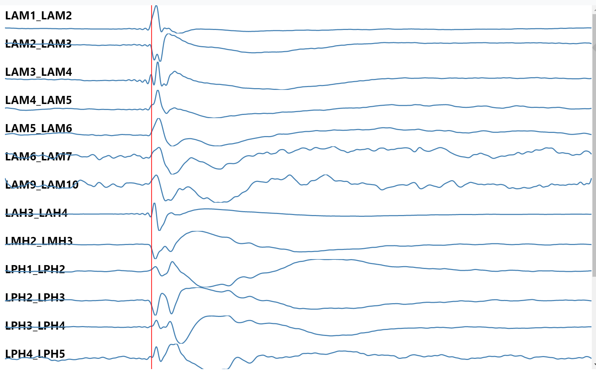

Single Pulse Electrical Stimulation¶
(Sub)Cortico-(Sub)Cortico Evoked Potentials¶
{
"reciprocal": {
"chan1_chan2": {
"response": "chan3_chan4"
}
},
"samplingRate": 1000,
"significant": {
"chan1_chan2": 1,
},
"time": {
"chan1_chan2": [-54.354406730593283]
},
"window": [
-500,
1500
],
"zscores": {
"chan1_chan2": {
"n1": [
535,
10.028049634488145
],
"n2": [
601,
14.02594624915977
],
"p2": [
546,
-2.2825574277800249
],
"flipped": 1,
"overall": [
535,
10.028049634488145
]
}
}
}